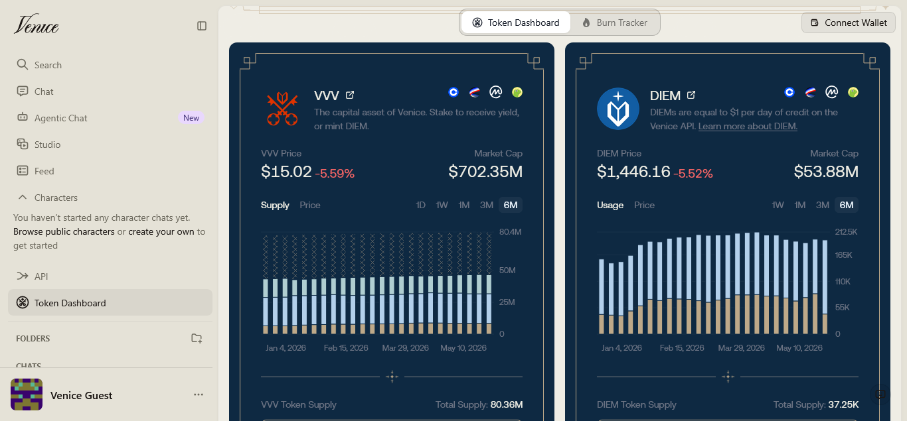

AI Website Builder
Artificial intelligence has become a central part of modern work, creativity, and communication. Yet as AI adoption grows, concerns about privacy, data ownership, and content restrictions have become increasingly prominent. Venice.ai has emerged as a notable alternative in the AI landscape by positioning itself as a privacy-focused and relatively unrestricted AI platform designed for users who want greater control over their data and interactions.
What Is Venice.ai?
Venice.ai is a generative AI platform that provides access to multiple AI capabilities, including text generation, image creation, video generation, audio tools, coding assistance, and AI-powered search. Unlike many mainstream AI services, Venice emphasizes user privacy and claims that conversations are not stored on its servers by default. The platform combines access to open-source models and selected frontier AI models through a unified interface.
Founded by entrepreneur Erik Voorhees, Venice was built around the idea that AI should be private, user-controlled, and open to exploration without excessive restrictions. The company's philosophy centers on digital sovereignty, arguing that users should retain ownership of their prompts, conversations, and generated content.
Core Features ://
Venice.ai offers a broad range of AI-powered capabilities:
1. AI chat and text generation 2. Image generation and editing 3. Video creation
4. Audio and music generation 5. Coding assistance 6. Web search integration
7. OpenAI-compatible developer APIs 8. Custom AI characters and workflows
The platform supports numerous AI models from providers and open-source communities, allowing users to choose models optimized for reasoning, coding, creative writing, image generation, or other specialized tasks.
Privacy as a Core Differentiator ://
Privacy is Venice.ai's most distinctive selling point. According to the company, conversation history is stored locally on the user's device rather than on Venice-operated servers. Requests are routed through a proxy architecture designed to minimize data retention and reduce exposure of user information.
:> Venice describes four privacy modes:
1. Anonymous – User identity is obscured, though model providers may still retain prompts.
2. Private – Uses zero-data-retention infrastructure and contractual privacy protections.
3. TEE (Trusted Execution Environment) – Employs hardware-isolated environments for additional security.
4. E2EE (End-to-End Encryption) – Prompts are encrypted on the user's device and only decrypted within verified secure environments.
// These privacy options are designed to give users flexibility between convenience, model access, and security requirements.
The "Uncensored AI" Approach ://
Another aspect that differentiates Venice.ai is its marketing around "uncensored" or less restrictive AI interactions. The company argues that excessive content filtering can limit creativity, curiosity, and open inquiry. As a result, Venice generally offers more permissive interactions than many mainstream AI assistants while still operating within legal and platform-specific boundaries.
This approach has attracted users who want greater freedom for experimentation, research, creative writing, and technical exploration. However, it also places greater responsibility on users to critically evaluate AI-generated content and use the technology responsibly.
Developer and Business Applications ://
Beyond consumer use, Venice.ai has expanded its focus toward developers and businesses. The platform provides an OpenAI-compatible API that supports text, images, video, music, embeddings, and web-based tools through a single interface. This compatibility allows developers to integrate Venice services into existing AI workflows with minimal code changes.
The company has also pursued partnerships and integrations that extend its technology into agentic AI systems and other emerging applications.
Pricing Structure ://
Venice.ai offers a free tier with limited daily usage and paid subscription plans for power users. Premium plans provide access to advanced models, higher generation limits, expanded context windows, encrypted backup features, API access, and additional credits for video, music, and premium AI services.
This tiered approach allows casual users to experiment with the platform while giving professionals access to more advanced capabilities.
Strengths and Challenges
Strengths :/
# Strong emphasis on privacy and user control
# Broad multimodal capabilities across text, images, audio, and video
# Flexible model selection
# OpenAI-compatible API
# More permissive AI interactions than many competitors
Challenges
@ Some advanced privacy features are limited to paid plans
@ Certain privacy claims rely on architectural trust assumptions and infrastructure providers
@ Smaller ecosystem compared with major AI companies
@ User feedback indicates occasional concerns about memory, prompt management, and feature consistency as the platform evolves.
Conclusion ://
Venice.ai represents a growing movement toward privacy-focused artificial intelligence. By emphasizing local data storage, optional encryption technologies, model flexibility, and fewer content restrictions, the platform has carved out a distinct position in an increasingly competitive AI market. While it faces the same challenges as many rapidly evolving AI services, its focus on user sovereignty and privacy continues to attract creators, developers, and organizations seeking alternatives to traditional AI platforms.
As concerns about data ownership and AI governance continue to grow, platforms like Venice.ai demonstrate that privacy and AI innovation do not have to be mutually exclusive.
AI Website Builder